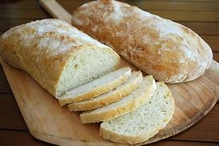

Pão Ciabatta
Ingredientes
- 500g de farinha de trigo
- 10g de fermento biológico seco
- 10g de sal
- 350ml de água morna
- 2 colheres de sopa de azeite de oliva
Modo de Preparo
- Em uma tigela grande, misture a farinha e o fermento seco.
- Adicione o sal e misture bem.
- Faça um buraco no centro da mistura e despeje a água morna e o azeite.
- Misture tudo até formar uma massa pegajosa.
- Sove a massa em uma superfície enfarinhada por cerca de 10 minutos, até ficar macia e elástica.
- Cubra a massa com um pano úmido e deixe descansar em um local quente por 1 hora, ou até dobrar de tamanho.
- Divida a massa em duas partes iguais e forme duas baguetes ou pães ovalados.
- Coloque os pães em uma assadeira enfarinhada e deixe descansar por mais 30 minutos.
- Pré-aqueça o forno a 220°C.
- Asse os pães por 20-25 minutos, ou até que estejam dourados e com uma crosta firme.
- Retire do forno e deixe esfriar sobre uma grade.
- Sirva o Pão Ciabatta cortado em fatias e aproveite!